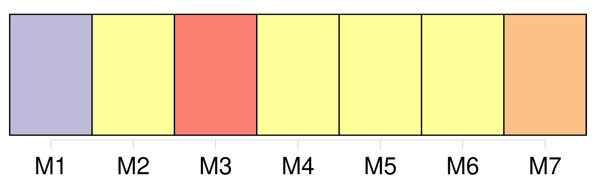

Longueur nb maillons : 27 mentions |
  |
Je revis Angèle, ma sœur, agenouillée et demandant du secours à Dieu, et j'entendis les cris terrifiés de [Nicole et Nicolas] , [les deux jumeaux] [26 phrases] Qui donc prenait soin [des jumeaux] en mon absence?? [4 phrases] Et puis, qui donc à part moi pouvait faire obéir [l'espiègle Nicole et le turbulent Nicolas] ??
Et mon imagination créait mille dangers auxquels [les deux enfants] ne pouvaient échapper. [4 phrases]
[Les jumeaux] avaient bonne mine et [ils] gardaient un air si sage que je ne trouvais aucune recommandation à [leur] faire. [1 phrases]
À sa mort, trois ans plus tôt, j'étais déjà grande et forte et ma mère avait décidé que je resterais à la garde [des jumeaux] , et qu'on m'adjoindrait une femme de ménage pour m'éviter les gros travaux. [1 phrases] Notre père passait ses veillées à fabriquer des jouets pour [les petits] [55 phrases]
Et quand il nous arrivait, à Firmin et à moi de jouer avec [les jumeaux] et de [les] faire rire jusqu'à [les] rendre malades, elle se tenait à l'écart, sans rire ni se fâcher. [15 phrases]
Je me revoyais déjà de retour à la maison où je retrouvais la gaieté si amusante de mon frère, les caresses [des deux petits] , et enfin toute la tendresse de mes parents avec leur bon accord revenu. [33 phrases]
Manine s'appelle Marceline, comme tante Rude s'appelle Gertrude, mais ces deux noms trop difficiles à prononcer pour [les jumeaux] ont été transformés ainsi par [eux] , et personne ne songe à les rétablir. [63 phrases]
J'en suis un peu jalouse pour [nos jumeaux] , [que] je trouve cependant d'une beauté surprenante. [34 phrases] « J'ai aussi à te dire que [les jumeaux] font bien enrager la nouvelle femme de ménage. [102 phrases]
Dans ces moments -là [les jumeaux] restaient tranquilles pour l'écouter, et nos parents eux -mêmes prenaient plaisir à le voir et à l'entendre. [59 phrases] [Les jumeaux] m'apercevant s'écartèrent comme apeurés, et mes parents détournèrent la tête. [5 phrases] Mon père et [les jumeaux] s'approchèrent rapidement aussi. [9 phrases]
Ils mirent au lit [les jumeaux] , las de grand air et de jeux, et après nous avoir tous embrassés très tendrement, ils reprirent le chemin de la gare accompagnés seulement d'oncle meunier. [46 phrases] Et puis pour me payer de ma peine, j'avais [les jumeaux] ; [tous deux] se disputaient mes caresses et les leurs m'étaient aussi douces que le repos. J'avais encore la petite Reine que j'aimais presque à l'égal [des jumeaux] depuis la nuit où nous avions souffert et pleuré ensemble. [9 phrases] Aujourd'hui parce que c'est dimanche et que nous sommes à nous reposer au bord de la rivière, il retient l'attention de [Nicole et Nicolas] en lançant au fil de l'eau de tout petits bouts de bois, qui grandiront en cours de route, dit -il, et deviendront des navires magnifiques auxquels il donne déjà des noms. |

|
La ressource peut être téléchargée sur la page Ortolang
Si vous avez des questions ou vous voyez des erreurs, merci d'envoyer un mail à silvia.federzoni89@gmail.com
Site développé par S. Federzoni (contact)